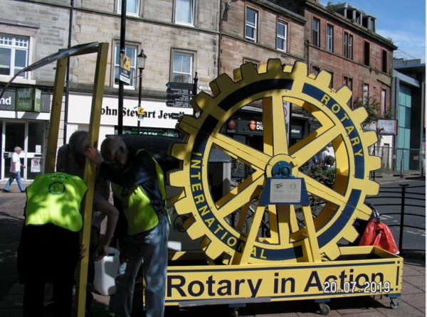

Our Club

Ayr Rotary is part of Rotary International, the largest service organisation in the world, with over 1.2 million members. We are very active in the local community, running several major projects including the Rotary Beach Clean, Poppy Collection, Food Bank and Message in a Bottle.
Our mission is to enjoy "fun and friendship while helping others".
If you have talents to offer, and would like to give something back to the community, we want to hear from you.
Drop a note to our secretary and come along to a meeting to find out more. It's a great way to meet people and make long-lasting friendships.
Men and women of all ages are welcome, and you choose the type of activities you would like to be involved with. For example, if you are fit and like the outdoors you may want to join our team that help maintain the Ayrshire Coastal Path, or you may find organising the annual Youth Speaks competition more to your liking. At Ayr Rotary, you choose how much effort you want to put in, whilst enjoying the friendly banter at our weekly meetings.